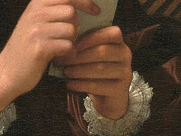
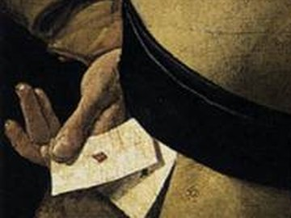
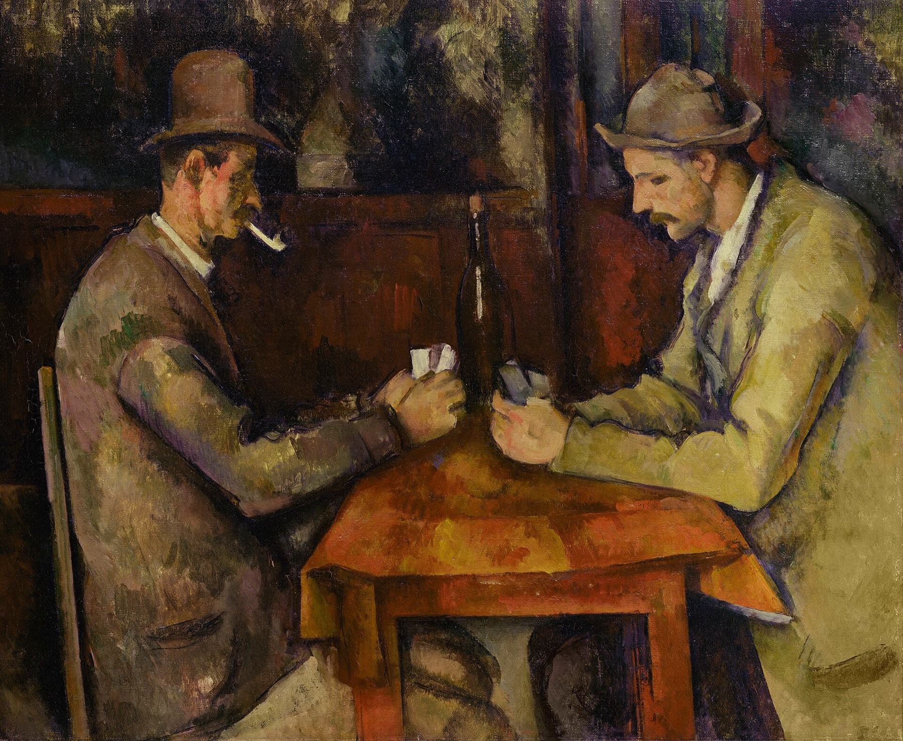
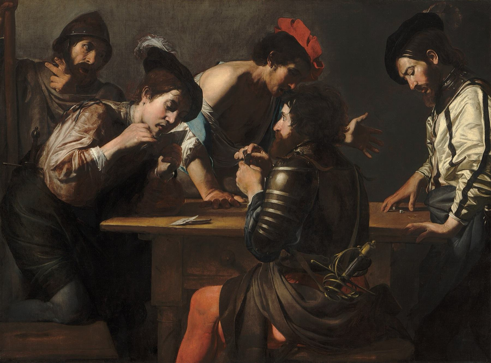
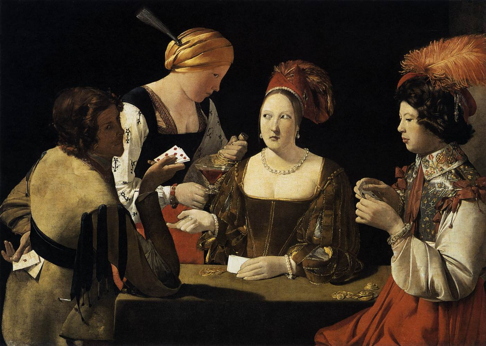
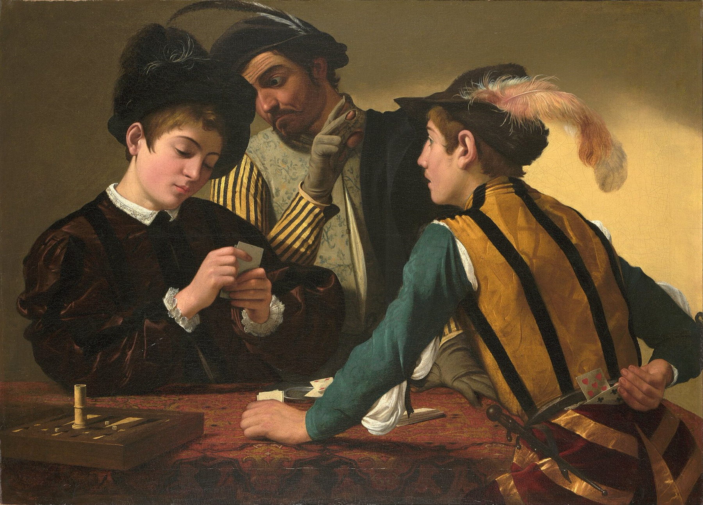

Remainders in chunks
Don't divide 7217 by 12 in one go. Peel off easy multiples: 7217 = 7200 + 12 + 5. Each chunk is a multiple of 12 except the 5, so 12 leaves 5. For 13 it's 7217 = 6500 + 650 + 65 + 2, so 13 leaves 2. Drill 1 trains this.
Draw eight cards, then use + − × ÷ to hit a four-digit number. Here is how I do it in my head, and five drills to train it.
Start trainingI drew this hand

1, 4, 5, 6, 8, 9, 11 and 12, and the target was 7217. Every card
gets used exactly once.That is one answer. The same hand has 210 different answers, and you will see every one of them further down.

First, believe it can be done. About 98 hands in 100 have an answer, and most of those have over a hundred. So you are not hunting for one magic path. You are picking one of many.
Next, look at the big cards. A typical answer is one big multiplication, the trunk, with a few small fixes added along the way. The trunk is usually three or four of the five biggest cards.
Here the five biggest are 12, 11, 9, 8 and 6. What does the trunk look like?
Now work backwards from the target. You want to divide 7217 by one of the trunk cards. It almost never divides cleanly, so you nudge it by a small number first.
Can 7217 be nudged to divide by 9? There is a trick for 9: a number divides by 9 when its digits add up to a multiple of 9.
And you have a 1 in your hand to pay for that nudge. In the final answer it shows up as the − 1 at the end.
You need to be able to do this kind of division in your head. It is not hard. It just takes practice, and there is a drill for it at the bottom of this page.
Look at what happened. The 9 and the 1 are spent, and the problem got smaller. Now you need to make 802 from the six cards that are left.
Same move again. Can 802 be nudged to divide by 12? To divide by 12 a number has to divide by 3 and by 4. Add 2 and it works.
That last part can look like luck. It isn't. Most hands have hundreds of answers, so trying the cards as dividers turns one up fast. But which cards, and in what order? I tested that next.
I wanted to know, so I made a computer play like a person. It was only allowed what you can do in your head: find a remainder, spot a card, and finish a small number with the last few cards. Then it played 300 eight-card hands with each strategy, and I counted how many tries each one needed.
3 in 10
hands solved by getting close with a big product and then making up the gap. The gap is usually an awkward number like 89, and the cards you have left can't make it.
98 in 100
hands solved by dividing down with nudges, the way I showed above.
8%
of hands fall to the first route you try if you pick dividers in any order. Four in ten fall within ten tries.
51%
fall to the first route if you divide by your biggest card, then your next biggest, paying each nudge with one card. Eight in ten fall within ten tries.
After two dividers you have a few cards left and one number to make with them. Small numbers are easy. Big ones almost never work. Two big dividers, like 12 and 11, shrink a four-digit target to about 50.
Every card you spend on a nudge is a card you don't have at the end. With four cards left, about 1 route in 4 finishes. With three, 1 in 20. With two, 1 in 140.
Divide by your biggest card. Pay the nudge with one card.
Do it again with the next biggest card.
Make what's left from the last four cards.
If the last step fails, change the second divider and try again, then the first. And the trunk was the right idea all along: the trunk is just your big dividers multiplied together.
So 7217 = 12 × (11 × ((6 + 1) × 9 − 8) − 4) + 5. That was the first route I tried, which happens about half the time.

Don't divide 7217 by 12 in one go. Peel off easy multiples: 7217 = 7200 + 12 + 5. Each chunk is a multiple of 12 except the 5, so 12 leaves 5. For 13 it's 7217 = 6500 + 650 + 65 + 2, so 13 leaves 2. Drill 1 trains this.
For most cards there is a shortcut that tells you at a glance whether a nudge worked.
| Divides by | Test | Example |
|---|---|---|
| 2 | last digit is even | 7218 |
| 3 | digits add to a multiple of 3 | 804: 8 + 0 + 4 = 12 |
| 4 | last two digits divide by 4 | 804: 04 |
| 5 | ends in 0 or 5 | 7215 |
| 6 | passes the tests for 2 and 3 | 7218 |
| 8 | last three digits divide by 8 | 7216: 216 = 8 × 27 |
| 9 | digits add to a multiple of 9 | 7218: 18 |
| 10 | ends in 0 | 7210 |
| 11 | alternate + and − across the digits, get a multiple of 11 | 7216: 7 − 2 + 1 − 6 = 0 |
| 12 | passes the tests for 3 and 4 | 804 |
| 7 or 13 | thousands minus the last three digits, since 1001 = 7 × 11 × 13 | 7217: 217 − 7 = 210 = 7 × 30 |
This is the 24 game with a different target. Multiply two cards to get near, then fix it with the other two. Spare cards can disappear: a 1 multiplies in for free, a pair like 7 and 7 becomes × 7 ÷ 7, and two cards in a row, like 9 and 8, become × (9 − 8). Drill 4 trains this.
Before you call an answer, check it. Swap every number for its digit sum and do the same sum. 12 × 601 + 5 becomes 3 × 7 + 5 = 26, and 26 becomes 8. The target 7217 becomes 17, then 8. They match. It doesn't work through division, so skip it when your answer divides.
Sometimes the target sits right by a multiple of two cards together. 9 × 8 = 72, and 72 goes into 7200, so 7217 = 72 × 100 + 17. Pay the 17 with 12 + 5, and 100 = (11 − 1) × (6 + 4). With no nudge between the two dividers you keep one more card for the end. In my test, the player that was allowed this move found answers fastest of all.
Every line below uses 1, 4, 5, 6, 8, 9, 11 and 12 once each and lands on 7217. Two answers that only swap the order, like a + b × c and c × b + a, count as one. The four I first found by hand are in orange.

How I counted: I dealt random hands (400 each for 4 and 5 cards, 300 for 6, 200 for 7, 500 for 8) from a normal deck, ace as 1 up to king as 13, each with a random target from 1000 to 9999. A computer then tried every way to combine the cards, keeping every step a whole number. Each extra card multiplies the numbers you can reach by about five.
Pour water on a sponge and it finds a way through. The holes connect into paths from top to bottom, and there are usually lots of paths, not just one.
Make the holes sparser and at some point the paths stop connecting. It does not fade out slowly. It flips, fast. Mathematicians call this percolation, and the flip is a phase transition.
Cards act the same way. With too few cards the paths to your target are rare. Eight cards are past the flip: there is almost always a way through, and when there is one, there are many.

Each drill trains one move of the method on a real eight-card hand. Clear one and move on to the next. Your progress stays in this browser. When they feel easy, the practice page has timed hands, sprints and a daily hand.
What does the card leave over? Split the target into easy chunks, like 7200 + 12 + 5 for 12. Ten right in a row clears this drill.
If 12 leaves 5, a 5 takes the target down to a multiple of 12, and a 7 takes it up. Tap the card that does it. Ten right in a row clears this drill.
Make 7217 divide by 12
Now both dividers. Tap a divider, then the card that pays its nudge. Biggest cards first, one card per nudge. You win the hand if the cards you have left can still make the number you end up with. Five wins clears it.
Target: 7217
The two dividers are done for you. Make the last number from the last four cards. This is where most hands are won. Five wins clears it.
Everything at once. Use all eight cards once each. The hints follow the sharpened method, one step at a time. Five solves clears it, and your best time is kept.
Target: 7217